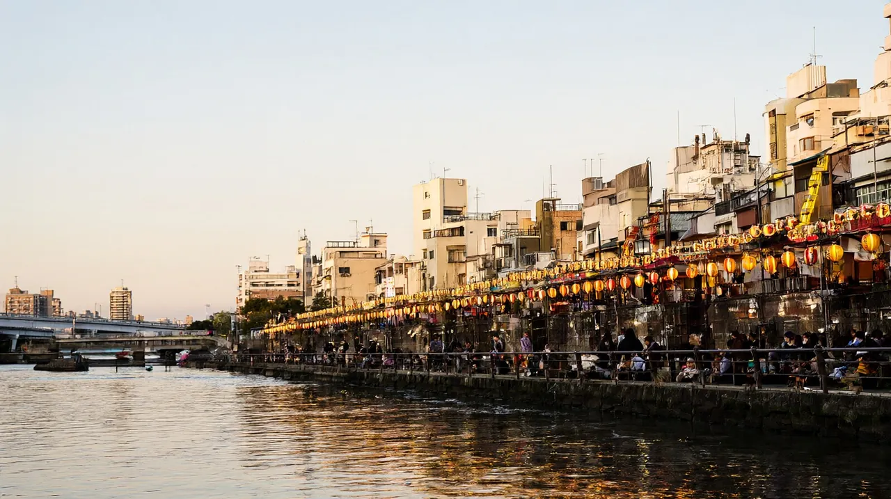

후쿠오카 여행 가이드
공항에서 하카타역까지 지하철 약 5분, 아이와 가기 쉬운 근거리 도시

이 글은 성인 2명과 초등학생 1명, 세 식구가 처음 후쿠오카에 간다고 가정하고 썼습니다. 기준일은 2026-10-22이며, 엔화는 100엔 837.70원(2026-10-21 시장 중간환율, 환율노트)으로 계산한 약 값입니다. 현찰로 바꾸면 수수료 때문에 이보다 더 듭니다. 같은 권역의 비교는 규슈 권역 페이지와 같은 값을 씁니다.
비행기에서 내려 시내 호텔까지 30분이 걸리지 않아서, 도착한 날 오후와 떠나는 날 오전까지 알뜰하게 쓸 수 있는 가족 여행지입니다. 다자이후 같은 근교도 하루면 다녀옵니다.
- 도시: 후쿠오카 (규슈 북부, 후쿠오카현의 중심 도시)
한눈에 보기
| 항목 | 내용 | 근거 |
|---|---|---|
| 추천 일수 | 2박 3일, 처음이라면 3박 4일까지 | 국내선 터미널역에서 하카타역까지 지하철로 약 5분이라 도착일 오후부터 일정을 넣을 수 있습니다 (후쿠오카공항 공식) |
| 비행시간 | 인천 출발 직항 약 1시간 30분 | 항공권 검색 사이트 표시값 (카약, 항공 시간표 사이트). 첫 편 06:30, 마지막 편 18:35 출발로 보이지만 시즌마다 달라지므로 확인 필요 |
| 아이 적합도 | 높음 | 비가 와도 갈 수 있는 실내 시설이 여럿 있습니다 (앙팡맨 어린이 박물관, 과학관, 마린월드 각 공식) |
| 환율 기준 | 100엔 = 837.70원 (2026-10-21) | 환율노트 |
이 도시가 맞는 사람
맞는 가족
- 2박 3일 같은 짧은 일정으로 아이와 첫 일본 여행을 하려는 가족. 비행이 약 1시간 30분이고 공항에서 하카타역까지 지하철 약 5분입니다 (후쿠오카공항 공식).
- 먹는 즐거움이 여행의 중심인 가족. 라멘과 야타이(길가 포장마차 식당)를 좁은 동선 안에서 모두 해 볼 수 있습니다 (후쿠오카 시 관광 공식).
- 하루쯤 근교를 곁들이고 싶은 가족. 다자이후는 텐진에서 전철로 약 30분입니다 (다자이후텐만구 공식).
덜 맞는 가족
- 대형 테마파크가 목적인 가족. 이 글에서 확인한 아이용 시설은 어린이 박물관, 수족관, 동물원, 과학관 규모이며 대형 테마파크는 확인하지 못했습니다 (확인 필요).
- 좁은 자리와 합석이 불편한 가족. 야타이는 옆 손님과 붙어 앉습니다 (후쿠오카 시 관광 공식).
- 국제선 터미널에서 곧장 지하철을 타고 싶은 가족. 지하철은 국내선 터미널에만 연결되어 있어서 무료 셔틀을 한 번 갈아타야 합니다 (후쿠오카공항 공식).
공항에서 시내까지
후쿠오카공항은 시내와 가장 가까운 공항 가운데 하나입니다. 다만 인천에서 오는 비행기는 국제선 터미널에 내리고 지하철역은 국내선 터미널에 있어서, 첫 이동에서 셔틀 한 번이 끼어든다는 점만 기억하면 됩니다.
| 노선 | 소요시간 | 요금 | 첫차와 막차 | 이런 가족에게 |
|---|---|---|---|---|
| 지하철 공항선, 하카타역까지 | 약 5분 (후쿠오카공항 공식) | 어른 260엔(약 2,200원), 어린이 130엔 (후쿠오카시 지하철 공식 요금표) | 공항역 출발 첫차 5:43. 막차는 평일과 토요일 0:35, 일요일과 공휴일 23:48 (후쿠오카시 지하철 공식 시간표, 2026-04-01 개정). 정정: 예전 안내의 첫차 5시 30분 무렵은 공식 시간표와 달라 고쳤습니다 | 대부분의 가족. 가장 빠르고 쌉니다 |
| 지하철 공항선, 텐진역까지 | 약 10분 (후쿠오카공항 공식) | 어른 260엔, 어린이 130엔 (후쿠오카시 지하철 공식 요금표) | 위와 같음 | 텐진에 묵거나 다자이후부터 가는 가족 |
| 시내버스, 하카타역 지쿠시구치 방면. 국제선 터미널 6번, 7번 승강장 | 가장 빠른 편 약 15분 (니시테쓰 공식) | 400엔, 교통 IC카드나 신용카드로 내면 380엔 (니시테쓰 공식, 2026-04-01 개정). 정정: 예전 270엔 표기는 공식 값과 달랐습니다 | 평일 첫 편 8:00, 막차 21:00, 9~17시는 15분 간격 (니시테쓰 공식 시간표) | 지하철역까지 걷기 싫을 때 |
| 직행 버스(다자이후 라이너 버스), 다자이후 방면 | 30분 미만 (다자이후텐만구 공식). 니시테쓰 공식 표준은 약 25분 | 700엔, 교통 IC카드나 신용카드로 내면 680엔 (니시테쓰 공식, 2026-04-01 개정) | 하카타 버스터미널 출발 기준 평일 28편, 토요일과 일요일과 공휴일 36편 (니시테쓰 공식). 공항 출발 시각은 확인 필요 | 도착하자마자 다자이후로 가는 일정 |
| 택시 | 확인 필요 | 하카타역까지 약 1,470엔부터 (여행 예약 사이트, 비공식, 확인 필요) | 확인 필요 | 아이가 많이 지쳤을 때 |
다자이후 라이너는 국제선 터미널에서 타는 버스입니다. 국내선 터미널에 있다면 무료 연락버스로 약 11분을 먼저 움직여야 합니다.
국제선 터미널에서 지하철을 타는 순서 (후쿠오카공항 공식)
- 도착 게이트를 나와 무료 셔틀버스 5번 승강장에서 탑니다. 다음 정류장인 국내선 터미널 남쪽에서 내리면 지하철 출입구 1A, 1B가 가깝습니다.
- 유모차나 휠체어는 국내선 터미널 개찰구 쪽 엘리베이터를 쓰도록 안내합니다.
- 셔틀은 무료이고 낮에는 5~7분 간격입니다. 국제선 터미널 출발 기준 첫차는 6시 17분 전후, 막차는 23시 21분 전후입니다 (후쿠오카공항 공식 시각표, 변동 가능).
숙소 권역
아래 가격은 2026-10-19~21에 검색 사이트에서 본 최저 표시가를 1달러 1,326원으로 바꾼 약 값입니다. 10월은 같은 호텔의 연중 평균 가격이 가장 높은 달로 표시되므로 (카약) 실제 예약가는 더 높을 수 있고, 세 식구가 쓰는 방은 요금이 더 오를 수 있어 확인 필요입니다.
| 권역 | 좋은 점 | 아쉬운 점 | 어울리는 가족 |
|---|---|---|---|
| 하카타역 주변 | 공항 지하철 약 5분, 신칸센과 JR 역, 다자이후 직행 버스가 출발하는 버스터미널이 모두 있습니다 (다자이후텐만구 공식) | 사람이 많고 가을 성수기에 요금이 오릅니다 | 첫 방문 가족, 이동이 많은 일정 |
| 텐진 주변 | 니시테쓰 전철로 다자이후 가기 편하고 쇼핑가가 가깝습니다 | 공항까지 지하철 약 10분으로 하카타역보다 조금 멉니다 | 다자이후를 자주 오갈 일정, 부모님 동반 |
| 나카스, 캐널시티 주변 | 앙팡맨 어린이 박물관이 나카스카와바타역과 바로 이어지고 (앙팡맨 공식) 야타이가 가깝습니다 | 밤에 번화가 소음이 있습니다 | 어린 자녀 동반, 야타이가 목적인 가족 |
| 공항 주변 | 새벽 비행이나 늦은 도착에 편합니다 | 시내 관광은 지하철로 따로 이동해야 합니다 | 새벽 출발편, 짧은 경유 |
초등학생 한 명을 데리고 처음 간다면 하카타역 주변이나 나카스 쪽이 무난합니다. 공항에서 짐을 끌고 환승 없이 도착할 수 있고, 첫날 저녁 야타이까지 걸어갈 수 있기 때문입니다.
추천 일정
| 일정 | 요약 | 글 |
|---|---|---|
| 2박 3일 | 1일차 앙팡맨 어린이 박물관과 야타이, 2일차 다자이후와 오후 휴식, 3일차 후쿠오카 타워(선택) 후 공항 | 후쿠오카 2박 3일 가족 일정 |
| 3박 4일 | 2박 3일에 하루를 더해 우미노나카미치 해변공원과 마린월드, 또는 야나가와 뱃놀이를 넣습니다 | 후쿠오카 3박 4일 가족 일정 |
| 4박 5일 | 3박 4일에 노코노시마 섬 반나절, 또는 과학관과 동식물원 같은 시내 하루를 더합니다 | 후쿠오카 4박 5일 가족 일정 |
일정이 길어질수록 하루에 두 곳을 넘기지 않는 편이 아이에게 편합니다. 규슈의 다른 도시와 묶는 방법은 권역 페이지에 있습니다 (규슈 권역).
아이 동반 코스
| 시설 | 요금과 시간 | 예약 | 유모차, 수유실, 휴식 |
|---|---|---|---|
| 앙팡맨 어린이 박물관 (나카스카와바타역 직결) | 1세 이상 2,000~2,200엔(날짜별 변동). 10:00~17:00, 마지막 입장 16:00 (앙팡맨 공식) | 예약제는 아닙니다. 날짜를 정하는 웹티켓은 입장일 60일 전 10시부터 팝니다 | 안으로 유모차를 가져갈 수 없고 보관 구역과 코인로커가 있습니다. 쉬어야 할 때 쓰는 방이 있고, 5층과 6층에 수유실(베이비룸)이 한 곳씩 있습니다. 수유실은 여성 전용(5층은 개인실 있음)이고 기저귀 교환 구역은 남성도 들어갑니다. 분유용 뜨거운 물 수도꼭지가 있습니다 (앙팡맨 공식 안내). 개장 직후부터 14시까지 붐비고 오후가 비교적 여유롭습니다 |
| 마린월드 우미노나카미치 (수족관) | 성인 2,500엔, 소중학생 1,200엔, 유아(3세~미취학) 700엔. 보통 9:30~17:30, 12~2월은 10:00~17:00, 입장은 폐관 1시간 전까지 (마린월드 공식) | 불필요. 디지털 티켓은 선택. 2027-01-12~04-09에는 바다사자와 돌고래 쇼가 중단됩니다 | 유모차 무료 대여(보증금 500엔), 수유실 1곳, 아기용 따뜻한 물 제공 |
| 우미노나카미치 해변공원 | 15세 이상 450엔, 중학생 이하 무료. 3~10월 9:30~17:30, 11~2월 9:30~17:00 (공원 공식). 11월 10일~12월 30일은 화요일 휴원 | 불필요 | 대여 자전거 3시간 성인 600엔, 어린이 400엔, 예약 불가. 입장료는 현금만 받습니다 |
| 후쿠오카 시 동식물원 | 성인 600엔, 고교생 300엔, 중학생 이하 무료. 9:00~17:00, 입장 16:30까지, 월요일 휴원 (동식물원 공식). 언덕이 많습니다 | 불필요 | 주차 500엔이지만 만차가 잦아 대중교통을 권합니다 (관광 안내 사이트) |
| 후쿠오카 시 과학관 | 입장 무료. 5층 전시실과 6층 돔 극장은 유료이며, 돔 일반 프로그램은 성인 510엔, 고교생 310엔, 초중학생 200엔, 미취학 무료. 화요일 휴관 (과학관 공식). 기본 전시실 요금은 확인 필요 | 불필요 (상영 일정만 확인) | 비 오는 날의 대안 |
| 후쿠오카 타워 | 성인 1,000엔, 초중학생 500엔, 4세 이상 유아 200엔. 9:30~22:00, 마지막 입장 21:30 (타워 공식) | 불필요 | 하카타역에서 버스 약 25분, 텐진에서 약 20분 (타워 공식). 버스 요금은 확인 필요 |
맛집 시간대
| 시간대 | 추천 | 예약 |
|---|---|---|
| 아침 | 호텔 조식이나 편의점, 하카타역 주변 가게 | 불필요 |
| 점심 | 하카타 라멘. 동네 가게는 700~1,000엔대(비공식 정리). 이치란 본점급은 규슈 기준 980엔 안팎(비공식 정리)이며, 2026년 7월 가격 개정 이후 값은 확인 필요 | 대부분 불필요 |
| 저녁 | 야타이. 대부분 18:30~19:00에 열고 자정 무렵 닫습니다. 화장실이 없고 큰 짐은 곤란하며, 대부분 현금만 받고, 한 사람이 음료 하나와 요리 하나는 시키는 것이 예의입니다 (후쿠오카 시 관광 공식). 쉬는 날은 가게마다 다르고 비가 오면 닫는 곳도 있습니다 | 예약을 받는 가게는 일부 |
| 야식 | 야타이 2차나 심야 영업 라멘집 | 확인 필요 |
아이와 갈 때는 문 열자마자 들어가야 대기가 짧습니다. 야타이가 부담스러우면 캐널시티나 하카타역 식당가 같은 실내 식당이 좋은 대안입니다.
근교 당일치기
| 목적지 | 이동 시간 | 요금 | 메모 |
|---|---|---|---|
| 다자이후 (텐만구, 우메가에모치) | 텐진에서 약 30분 (다자이후텐만구 공식). 후쓰카이치에서 갈아타는 경로이며 합계 25~40분 (재팬가이드, 비공식) | 니시테쓰 편도 480엔 (재팬가이드). 왕복 전철표와 우메가에모치 교환권을 묶은 산책 티켓은 어른 1,040엔(종이)/1,000엔(디지털), 어린이 600엔/580엔 (니시테쓰 공식). 하카타 버스터미널에서 직행 버스로 약 40~45분 | 텐만구 입장은 무료. 개문 6:30 전후, 폐문 18:30~19:30(계절별). 부속 박물관 마지막 입장 16:00 (텐만구 공식) |
| 야나가와 (뱃놀이, 장어찜) | 니시테쓰 특급 약 49~52분 (비공식 정리, 확인 필요) | 뱃놀이 편도 어른 2,000엔, 어린이(5세~초등) 1,000엔, 약 1시간 (운영사 공식). 다자이후와 묶은 관광 티켓은 디지털 어른 3,620엔/어린이 1,810엔, 종이 3,730엔/1,870엔, 2일 유효 (니시테쓰 공식) | 접수 마감 15:00 전후. 12~2월은 난방 탁자가 있는 배를 탑니다. 배 안 화장실은 확인 필요 |
| 노코노시마 (꽃 공원 섬) | 메이노하마 도선장에서 배로 약 10분 (후쿠오카현 관광 공식) | 공원 입장 고교생 이상 1,500엔, 초중학생 800엔, 3세 이상 500엔 (공원 공식, 연령 구분은 학년 기준). 배는 편도 어른 230엔, 어린이(초등학생 이하) 120엔이고 미취학은 어른 1명당 1명 무료 (후쿠오카시 항만공항국 공식. 공원 안내 페이지는 어린이 140엔이라 적었으나 시 공식 값을 씁니다). 섬 안 버스는 어른 260엔, 어린이 130엔 (공원 공식) | 9:00~17:30(일요일과 공휴일 18:30, 겨울 17:30), 연중무휴 |
현지 팁·주의
- 지하철 1일권은 어른 640엔, 어린이 320엔입니다 (후쿠오카 시 관광 공식). 이동이 두세 번뿐인 날은 낱개 요금이 더 쌀 수 있으니 합산해 보세요.
- 후쿠오카 투어리스트 시티 패스는 어른 2,500엔, 어린이 1,250엔(다자이후 포함 2,800엔/1,400엔)이며 단기 체류 외국인만 여권으로 살 수 있습니다 (후쿠오카 시 관광 공식). 도심 위주 일정이면 본전을 뽑기 어렵습니다.
- 휴관일: 큐슈 국립박물관과 동식물원은 월요일, 과학관은 화요일입니다. 요일부터 맞추고 일정을 짜세요.
- 현금: 야타이는 대부분 현금만 받고, 우미노나카미치 공원 입장료도 현금만 받습니다.
- 면세: 2026-11-01 이후 구매분부터 일본 면세가 환급 방식으로 바뀝니다. 자세한 내용은 면세 안내 글(tax-free-2026-11)을 보세요.
귀국 동선
- 호텔에서 체크아웃한 뒤 숙소 근처 역에서 공항선을 탑니다. 하카타역에서 국내선 터미널역까지 약 5분입니다 (후쿠오카공항 공식).
- 지하철 출구 1A 또는 2A로 나와 1층 1번 승강장에서 무료 셔틀을 타고 국제선 터미널로 갑니다. 국내선 터미널 출발 기준 첫차 6시 정각, 막차 23시 19분 전후이고 낮에는 5~6분 간격입니다 (후쿠오카공항 공식 시각표). 걷는 시간도 넣어서 계획하세요.
- 체크인 카운터는 국제선 터미널 3층입니다 (후쿠오카공항 공식). 체크인 마감 시각은 항공사마다 달라 확인 필요이며, 이 사이트는 지하철과 셔틀, 환급 절차의 여유를 합쳐 출발 2시간 30분 전 도착을 권합니다 (편집 판단).
- 면세 환급: 2026-11-01 이후 구매분은 계산대에서 세금 포함가를 내고, 출국할 때 세관 확인을 받은 뒤 환급받습니다. 구매 후 90일 안에 출국해야 하고, 한 가게에서 하루 세금 제외 5,000엔 이상이 대상입니다. 후쿠오카공항에는 단말기가 있고 Visit Japan Web으로 온라인 절차도 할 수 있습니다 (일본 세관 공식). 수하물을 부치기 전에 받으라는 안내가 있습니다 (면세 안내 사이트, 비공식). 단말기는 수하물을 맡기기 전 국제선 출발 로비에 놓이고, 후쿠오카공항은 온라인 절차를 보안검색 전까지 할 수 있습니다 (일본 관광청 공식). 단말기의 정확한 위치와 운영 시간은 확인 필요입니다.
- 2026-10-31까지 구매분은 기존 방식(계산대에서 세금 제외가)입니다.
FAQ
- 후쿠오카공항에서 시내까지 얼마나 걸리나요? 국내선 터미널역에서 하카타역까지 지하철로 약 5분, 텐진까지 약 10분입니다 (후쿠오카공항 공식). 국제선 터미널에 내렸다면 무료 셔틀로 국내선 터미널까지 먼저 가야 합니다.
- 국제선 터미널에서 지하철로 바로 갈 수 있나요? 아니요. 지하철은 국내선 터미널에 연결되어 있고, 국제선 터미널과는 무료 셔틀로 이어집니다 (후쿠오카공항 공식).
- 다자이후 입장료가 있나요? 텐만구 입장은 무료이고 부속 박물관은 따로 받습니다 (다자이후텐만구 공식). 보물전은 일반 500엔, 관공역사관은 일반 200엔이며, 두 곳과 큐슈 국립박물관 문화교류전을 함께 보는 공통 티켓은 일반 1,000엔입니다 (큐슈 국립박물관 공식). 어린이 요금은 확인 필요입니다.
- 유모차를 가져가도 되나요? 앙팡맨 어린이 박물관은 안으로 유모차를 들일 수 없고, 마린월드는 무료로 빌려줍니다 (각 시설 공식). 공항에서는 유모차 이용자에게 엘리베이터 경로를 안내합니다.
- 야타이는 예약해야 하나요? 예약을 받는 가게는 일부이고, 대부분 줄을 서서 순서대로 앉습니다 (후쿠오카 시 관광 공식).
- 환전은 어떻게 하나요? 2026-10-21 시장 중간환율은 100엔 837.70원입니다. 인천공항 창구는 엔화를 살 때 수수료율이 4.5%로 표시되고 시내 창구 중간값은 1.75%입니다 (환율노트). 앱 우대 환전이 가장 유리합니다.
- 면세 환급은 언제부터 달라지나요? 2026-11-01 이후 구매분부터 환급 방식입니다 (일본 세관 공식).
관련 글
| 우선순위 | 글 식별자 | 제목 | 연결 이유 |
|---|---|---|---|
| 1 | 후쿠오카 2박 3일 가족 일정 | 후쿠오카 2박 3일 가족 일정 | 같은 지역 일정 |
| 2 | 항공권 총액 비교 | 항공권 총액 비교 | 항공 가격 확인 방법 |
| 3 | 2026년 11월 일본 면세 환급 절차 | 2026년 11월 일본 면세 환급 절차 | 귀국 동선 |
| 4 | 데이터가 안 될 때 대처법 | 데이터 없는 상황 대비 | 현장 연결 |
| 5 | 출국 체크리스트 | 출발 전 체크리스트 | 출발 준비 |
| 6 | 오사카 3박 4일 가족 일정 | 오사카 3박 4일 가족 일정 | 다른 도시 비교 |
다른 도시 비교
| 도시 | 비교 포인트 | 상태 |
|---|---|---|
| 후쿠오카 | 직항 약 1시간 30분, 공항에서 시내까지 지하철 약 5분, 1인 약 35~65만원 (가족 3인, 2박 3일) | 이 페이지 |
| 구마모토 | 같은 규슈의 자연 도시. 성과 아소, 구로카와를 렌터카로 잇습니다. 후쿠오카(하카타)와는 신칸센으로 30분대, 버스로 2시간 남짓입니다 (규슈 권역 기준) | 구마모토 여행 가이드 |
| 벳푸 | 규슈 동부 온천 도시. 직항은 대한항공 동계 한정입니다 | 벳푸 여행 가이드 |
| 나가사키 | 규슈 서부 역사 항구 도시. 후쿠오카와 묶으면 4박 5일을 권합니다 | 나가사키 여행 가이드 |
| 오사카 | 허브 작성 후 비교 | 오사카 여행 가이드, 확인 필요 |
| 도쿄 | 허브 작성 후 비교 | 도쿄 여행 가이드, 확인 필요 |
| 마쓰야마 | 허브 작성 후 비교 | 마쓰야마 여행 가이드, 확인 필요 |